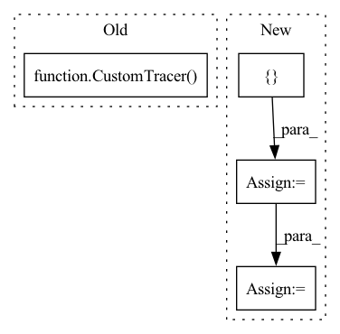

Pattern ID :25209
Before Change
else:
standalone_modules = qconfig_dict.get("standalone_module_name", [])
// skipping tracing standalone modules when tracing top level module
graph_module = GraphModule(model, CustomTracer( standalone_modules) .trace(model))
graph_module = _fuse_fx(graph_module, inplace)
quantizer = Quantizer()
return quantizer.prepare(graph_module, qconfig_dict, inplace=True, is_standalone_module=is_standalone_module)After Change
graph_module = symbolic_trace(model)
else:
standalone_modules = qconfig_dict.get("standalone_module_name", [])
custom_module_config = qconfig_dict.get("custom_module_class", [] )
custom_module_classes = [config[0] for config in custom_module_config]
// TODO: currently we are registering classes globally,
// we want to make custom module class mapping local
_register_custom_module_class(custom_module_config)
// skipping tracing standalone modules when tracing top level module
tracer = CustomTracer(standalone_modules, custom_module_classes)
graph_module = GraphModule(model, tracer.trace(model))
graph_module = _fuse_fx(graph_module, inplace)
quantizer = Quantizer()In pattern: SUPERPATTERN
Frequency: 3
Non-data size: 4
Instances Fragment ID: 77115833
Project Name: pytorch/pytorch
Commit Name: 7f6a1b2bd5eca2d25c70afe233f8b6878fec241d
Time: 2020-10-12
Author: jerryzh@fb.com
File Name: torch/quantization/quantize_fx.py
M Class Name: AnonimousClass
N Class Name: AnonimousClass
M Method Name: _prepare_fx(4)
N Method Name: _prepare_fx(4)
M Parent Class:
N Parent Class:
M File Name: torch/quantization/quantize_fx.py
N File Name: torch/quantization/quantize_fx.py
M Start Line: 53
M End Line: 55
N Start Line: 64
N End Line: 72
Before Change
register_observed_custom_module_mapping(CustomModule, ObservedCustomModule)
register_quantized_custom_module_mapping(CustomModule, QuantizedCustomModule)
m = torch.fx.GraphModule(original_m, CustomTracer() .trace(original_m))
qconfig_dict = {"": default_qconfig}
// check prepared model
m = prepare_fx(m, qconfig_dict)After Change
// TODO: add other quant types after mixed mode support
for quant_type in [QuantType.STATIC]:
qconfig_dict = {
"": default_qconfig,
"custom_module_class":
[(CustomModule, ObservedCustomModule, QuantizedCustomModule)]}
// check prepared model
m = prepare_fx(original_m, qconfig_dict)
// calibration
m(data)
// all activation observers are inserted in the top level module Fragment ID: 77115819
Project Name: pytorch/pytorch
Commit Name: 7f6a1b2bd5eca2d25c70afe233f8b6878fec241d
Time: 2020-10-12
Author: jerryzh@fb.com
File Name: test/quantization/test_quantize_fx.py
M Class Name: TestQuantizeFx
N Class Name: TestQuantizeFx
M Method Name: test_custom_module_class(1)
N Method Name: test_custom_module_class(1)
M Parent Class: QuantizationTestCase
N Parent Class: QuantizationTestCase
M File Name: test/quantization/test_quantize_fx.py
N File Name: test/quantization/test_quantize_fx.py
M Start Line: 711
M End Line: 737
N Start Line: 708
N End Line: 722
Before Change
custom_module_config = prepare_custom_config_dict.get("float_to_observed_custom_module_class", {})
custom_module_classes = list(custom_module_config.keys())
// skipping tracing standalone modules when tracing top level module
tracer = CustomTracer( standalone_modules, custom_module_classes)
graph_module = GraphModule(model, tracer.trace(model))
graph_module = _fuse_fx(graph_module, inplace)
quantizer = Quantizer()
return quantizer.prepare(After Change
if prepare_custom_config_dict is None:
prepare_custom_config_dict = {}
skipped_module_names = prepare_custom_config_dict.get("non_traceable_module_name", [] )
skipped_module_classes = prepare_custom_config_dict.get("non_traceable_module_class", [])
// symbolically trace the model
if not is_standalone_module:
// standalone module and custom module config are applied in top level module
standalone_module_names = prepare_custom_config_dict.get("standalone_module_name", [])
skipped_module_names += standalone_module_names
custom_module_config = prepare_custom_config_dict.get("float_to_observed_custom_module_class", {})
custom_module_classes = list(custom_module_config.keys())
skipped_module_classes += custom_module_classes Fragment ID: 77115824
Project Name: pytorch/pytorch
Commit Name: a06b95b2badc287355d75e43b944b6ebcea4a0ae
Time: 2020-10-19
Author: jerryzh@fb.com
File Name: torch/quantization/quantize_fx.py
M Class Name: AnonimousClass
N Class Name: AnonimousClass
M Method Name: _prepare_fx(5)
N Method Name: _prepare_fx(5)
M Parent Class:
N Parent Class:
M File Name: torch/quantization/quantize_fx.py
N File Name: torch/quantization/quantize_fx.py
M Start Line: 54
M End Line: 63
N Start Line: 50
N End Line: 64